전시 하이라이트
 고교회 전력 오신전 발표회: 전기-수소 융합 성과, 수소 휴대 발전 장비 세계 첫 공개2026-11-182026 고교회 전력 오신전 기간 중 전력수소에너지 전문위원회가 11월 26일 5관 신제품 발표 구역에서 '오신' 전기-수소 융합 혁신성과 발표회와 '칭펑' 수소 휴대 이동 전원을 선보입니다…
고교회 전력 오신전 발표회: 전기-수소 융합 성과, 수소 휴대 발전 장비 세계 첫 공개2026-11-182026 고교회 전력 오신전 기간 중 전력수소에너지 전문위원회가 11월 26일 5관 신제품 발표 구역에서 '오신' 전기-수소 융합 혁신성과 발표회와 '칭펑' 수소 휴대 이동 전원을 선보입니다…
 후이저우 과학기술 공동관, 제28회 고교회 참가2026-11-18후이저우 공동관(부스 15-C7)이 실험실, 연구기관, 기술기업과 함께 차세대 전자정보, 고급 장비, 첨단 소재, 신에너지, 지능 로봇, 반도체, 바이오의약 성과를 선보입니다…
후이저우 과학기술 공동관, 제28회 고교회 참가2026-11-18후이저우 공동관(부스 15-C7)이 실험실, 연구기관, 기술기업과 함께 차세대 전자정보, 고급 장비, 첨단 소재, 신에너지, 지능 로봇, 반도체, 바이오의약 성과를 선보입니다…
 중국-러시아 협력의 새 장: 제8회 스마트시티·스마트제조 비공개 매칭회(선전) 11월 26일 개막2026-11-172026년 11월 26일 중국과 러시아의 선도기업 대표 45곳 이상이 선전에 모여 기술 최전선과 협력 기회를 함께 찾습니다.
중국-러시아 협력의 새 장: 제8회 스마트시티·스마트제조 비공개 매칭회(선전) 11월 26일 개막2026-11-172026년 11월 26일 중국과 러시아의 선도기업 대표 45곳 이상이 선전에 모여 기술 최전선과 협력 기회를 함께 찾습니다.
 심해의 '중기': 잔장 첨단구, 해양 과학기술 성과로 참가2026-11-14잔장 첨단구는 이번 전시에 단독 참가하는 유일한 첨단구로, 15관 15-A7 부스에서 해양 장비, 해상 신에너지, 수중 스마트 장비, 해양 바이오 성과를 집중 전시합니다…
심해의 '중기': 잔장 첨단구, 해양 과학기술 성과로 참가2026-11-14잔장 첨단구는 이번 전시에 단독 참가하는 유일한 첨단구로, 15관 15-A7 부스에서 해양 장비, 해상 신에너지, 수중 스마트 장비, 해양 바이오 성과를 집중 전시합니다…
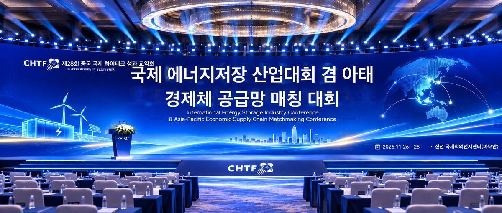
제28회 고교회 국제 에너지저장 산업대회 11월 26일 선전 개막2026-11-1311월 26일 아시아 에너지저장·배터리 산업전 동시 행사인 '국제 에너지저장 산업대회'가 8관에서 열립니다. 저장을 중심으로 전력, 풍력·태양광, 연산을 잇습니다…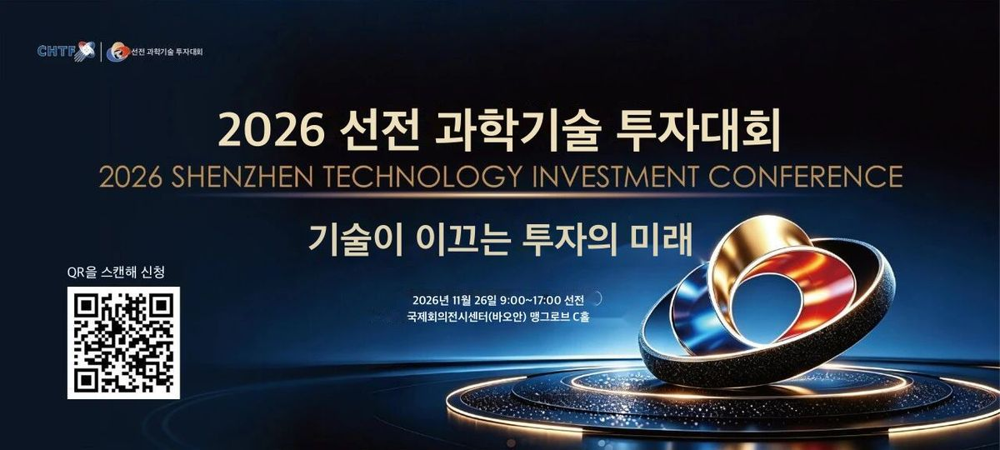
2026 선전 과학기술 투자대회: 3,000억 중앙자본과 1.15조 달러 국부펀드가 하드테크 한자리에2026-11-13하드테크 기업의 난제는 자본의 유무가 아니라 흩어진 자본을 한 번에 만나기 어렵다는 점입니다. 11월 26일 맹그로브 C홀에서 고교회 주제 포럼이 열립니다…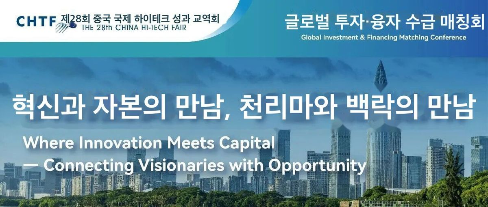
좋은 기술과 제품, 프로젝트를 자본과 연결: 글로벌 투자·융자 매칭회 프로젝트 모집2026-11-092026년 11월 26~28일 글로벌 투자·융자 매칭회가 13관 부스 13-A127에서 열립니다. 참가기업, 기술기업, 제품·프로젝트팀의 신청을 받습니다.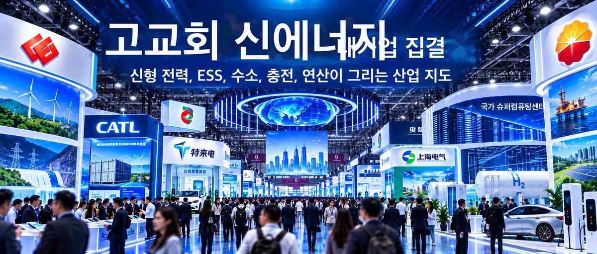
에너지 거인 총출동: 13개 에너지 대기업, 제28회 고교회 참가 발표2026-11-05국가전망, 남방전망, 다탕그룹, 화웨이, CATL, 중국가스, 선전에너지, 메이디, 위안둥전기, 난팡 펌프, 위차이신란, 커뤄 초저온, 페트로차이나 선전 신에너지연구원 등 13개 에너지 선도기업이… 엔비디아, 폭스콘, 삼성, TSMC 등 글로벌 거인 집결: 글로벌 구매 매칭대회 11월 26일 개막2026-10-30이번 고교회의 중점 구매 기업 명단은 글로벌과 중국 대기업이 나란히 포진합니다. 엔비디아, 폭스콘, 삼성, TSMC 등 전자정보 선도기업과 테슬라, 마이크로소프트, 소니, 지멘스, 파나소닉… 두 행사 연동: 고교회 전력 오신전의 고유한 가치2026-10-282026년 11월 26~28일 제28회 고교회 '오신' 전력설비기술전이 5관에서 열립니다. 올해는 15차 5개년 계획의 첫해입니다…
두 행사 연동: 고교회 전력 오신전의 고유한 가치2026-10-282026년 11월 26~28일 제28회 고교회 '오신' 전력설비기술전이 5관에서 열립니다. 올해는 15차 5개년 계획의 첫해입니다…
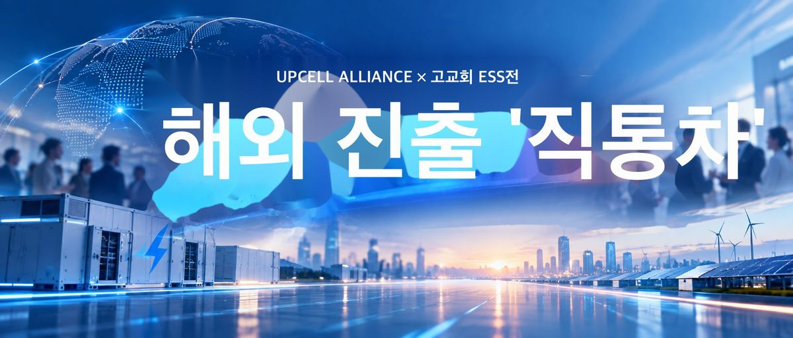
국제배터리산업협회 Upcell Alliance와 손잡고 중국 ESS 기업 해외 진출 '직통차'2026-10-28제28회 고교회 아시아 에너지저장·배터리 산업전과 Upcell Alliance가 전략 협력을 맺었습니다… 15차 5개년 성과 전환에 힘을: 산·학·연·금융·수요를 잇는 과학혁신 허브2026-10-26연구기관·대학·산학융합·국가중점실험실 구역에 칭화대, 베이징대, 푸단대, 퉁지대, 하얼빈공대, 상하이교통대, 우한대, 난카이대, 샤먼대 등이 모입니다…
15차 5개년 성과 전환에 힘을: 산·학·연·금융·수요를 잇는 과학혁신 허브2026-10-26연구기관·대학·산학융합·국가중점실험실 구역에 칭화대, 베이징대, 푸단대, 퉁지대, 하얼빈공대, 상하이교통대, 우한대, 난카이대, 샤먼대 등이 모입니다…
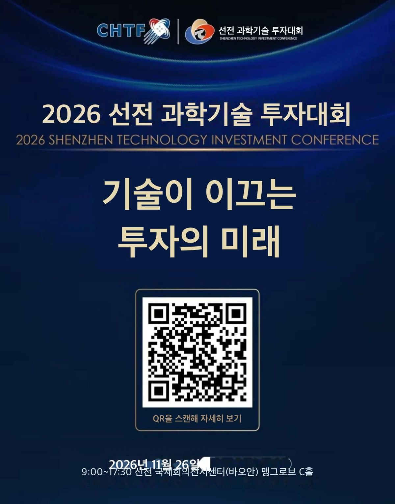
과학기술 혁신과 자본의 만남: 2026 선전 과학기술 투자대회가 제28회 고교회에서 열립니다2026-10-24과학기술 혁신과 자본의 만남: 2026 선전 과학기술 투자대회가 제28회 고교회에서 열립니다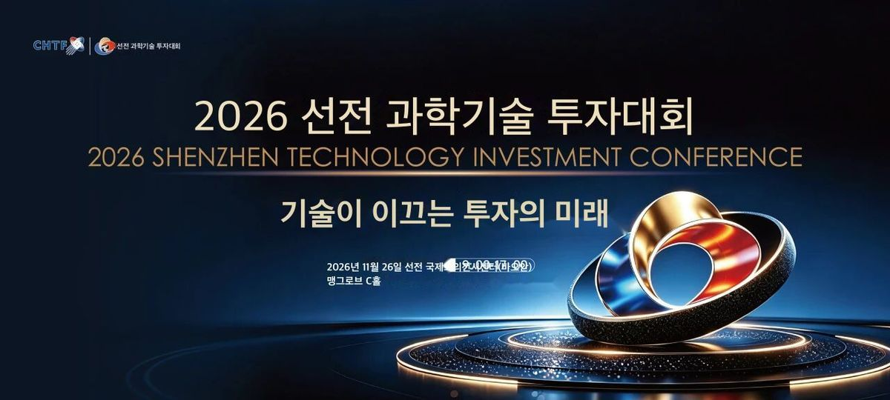
과학기술이 이끄는 투자의 미래: 2026 선전 과학기술 투자대회 11월 26일 개막2026-10-22고교회의 산업 생태계를 바탕으로 '전시-사상 교류-자본 연결-성과 거래'를 잇는 고위급 산업·금융 대화의 장입니다. 3일의 집중, 왜 산업 대화의 황금 시기인가: 제28회 고교회, 산업 행사 유치2026-10-19고교회 기간에 행사를 열면 산업체인, 혁신 주체, 투자기관이 이미 전시장에 모여 있어 내빈과 관람객이 전시와 회의를 한 번에 볼 수 있습니다…
3일의 집중, 왜 산업 대화의 황금 시기인가: 제28회 고교회, 산업 행사 유치2026-10-19고교회 기간에 행사를 열면 산업체인, 혁신 주체, 투자기관이 이미 전시장에 모여 있어 내빈과 관람객이 전시와 회의를 한 번에 볼 수 있습니다…
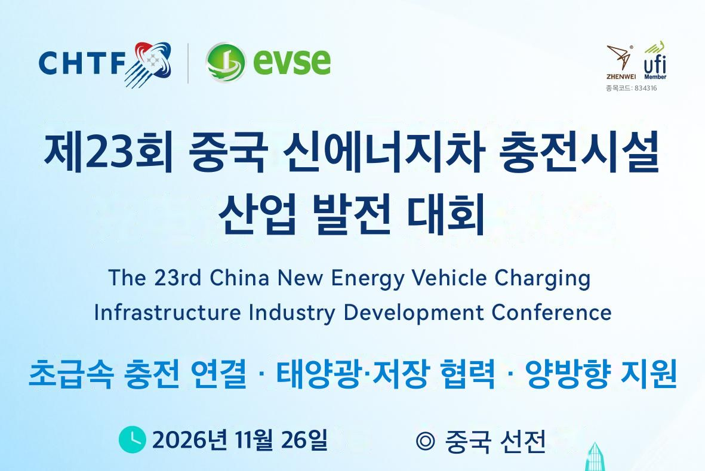
제23회 중국 신에너지차 충전시설 산업대회, 고교회의 '최강 두뇌'들과 산업 발전 논의2026-10-162026년 11월 26일 제23회 중국 신에너지차 충전시설 산업대회가 선전 국제회의전시센터(바오안)에서 열립니다. 아시아 태양광·저장·충전 산업전의 주요 행사입니다…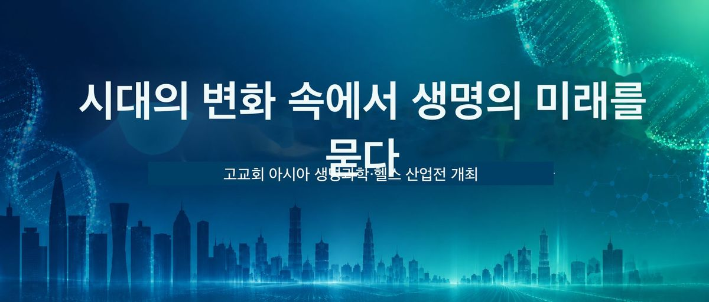
격변의 시대에 생명의 미래를 묻다: 고교회 아시아 생명과학·헬스 산업전 개최2026-10-13제28회 고교회 아시아 생명과학·헬스 산업전이 2026년 11월 26~28일 선전 국제회의전시센터(바오안)에서 열려 첨단 성과를 선보입니다…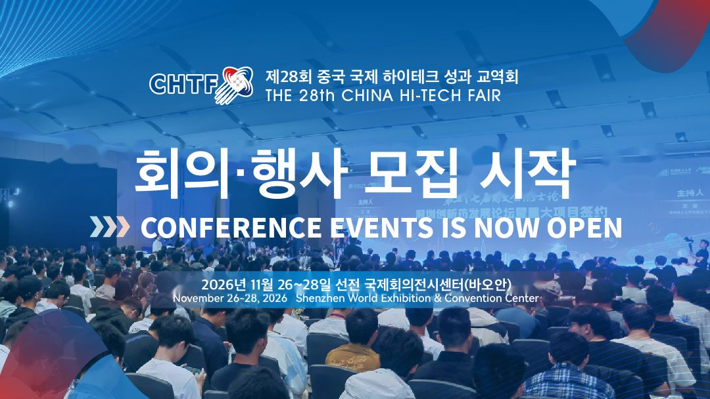
2026 산업 행사 트렌드: '회의 한 번'에서 '판을 짜는' 플랫폼형 행사로2026-10-122026 선전 과학기술 투자대회 개막 행사, 연산 AI 신생태 포럼, 범용 AI 혁신·산업 생태 서밋 등 AI 분야 주요 행사와 중국 저고도 경제 산업 행사가 열립니다…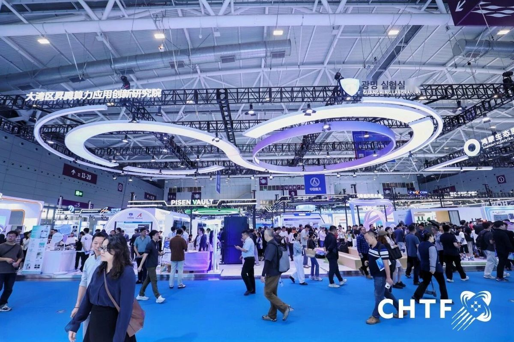
고교회 아시아 AI 컴퓨팅·데이터센터전 11월 선전 개최, '연산 수출'이 여는 조 단위 디지털 무역2026-10-09연산이 디지털 시대의 핵심 생산수단으로 떠오르며 세계 디지털 무역이 크게 바뀌고 있습니다. 전시는 2026년 11월 26~28일 선전 국제회의전시센터(바오안)에서 열립니다… 8대 선도기업과 체화지능 기업 100곳 가까이 집결: 고교회 아시아 로봇 산업체인전 준비 완료2026-10-08유니트리, 딥로보틱스, 부스터 로보틱스, Noetix, 루밍 로봇, 링신차오서우, 인스파이어 로봇, 신이창 로봇 등 8개 대표 기업이 참가를 확정했습니다. 휴머노이드·4족 로봇 본체, 운동 제어 등을 아우릅니다…
8대 선도기업과 체화지능 기업 100곳 가까이 집결: 고교회 아시아 로봇 산업체인전 준비 완료2026-10-08유니트리, 딥로보틱스, 부스터 로보틱스, Noetix, 루밍 로봇, 링신차오서우, 인스파이어 로봇, 신이창 로봇 등 8개 대표 기업이 참가를 확정했습니다. 휴머노이드·4족 로봇 본체, 운동 제어 등을 아우릅니다…
 과학기술 혁신으로 본 출발의 시기와 흐름: 고교회 전력 오신전에서 느끼는 세계 전력 기술 혁신의 열기2026-10-0611월 26~28일 제28회 고교회가 선전 국제회의전시센터(바오안)에서 개막합니다. 이번 고교회는 에너지 혁명의 새 흐름을 앞서 반영해 처음으로 신형 전력, ESS…
과학기술 혁신으로 본 출발의 시기와 흐름: 고교회 전력 오신전에서 느끼는 세계 전력 기술 혁신의 열기2026-10-0611월 26~28일 제28회 고교회가 선전 국제회의전시센터(바오안)에서 개막합니다. 이번 고교회는 에너지 혁명의 새 흐름을 앞서 반영해 처음으로 신형 전력, ESS…
 신에너지 시대의 최종 승부, 연산·전력·탄소: 디지털 경제 탄소중립의 난제를 어떻게 풀까2026-09-30연산, 전력, 탄소의 '3력 게임'이 본격화됐습니다. 연산은 확장해야 하고 전력은 뒷받침해야 하며 탄소는 제약합니다. 셋은 서로 의존하고 견제하며, 디지털 산업의 성장통이자 신에너지 전체의…
신에너지 시대의 최종 승부, 연산·전력·탄소: 디지털 경제 탄소중립의 난제를 어떻게 풀까2026-09-30연산, 전력, 탄소의 '3력 게임'이 본격화됐습니다. 연산은 확장해야 하고 전력은 뒷받침해야 하며 탄소는 제약합니다. 셋은 서로 의존하고 견제하며, 디지털 산업의 성장통이자 신에너지 전체의…
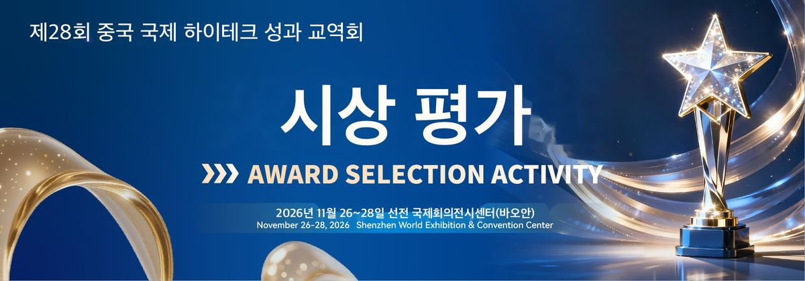
영예로 증명하는 혁신: 제28회 고교회 5대 시상 신청 안내2026-09-22과학기술 혁신의 모범을 찾고 참가 기관의 혁신 성과, 조직 역량, 전시 수준, 서비스 공헌을 표창하기 위해 5대 전문 시상을 마련해 권위 있는 평가와 브랜드 지원 체계를 구축합니다… 큰 에너지, 큰 미래: 제28회 고교회 '대에너지' 부문 개막, 5대 분야 한자리에2026-09-21선전시 인민정부가 주최하고 전웨이 전시그룹이 주관하는 제28회 고교회가 11월 26~28일 선전 국제회의전시센터(바오안)에서 개막합니다. 이번 전시회의 가장…
큰 에너지, 큰 미래: 제28회 고교회 '대에너지' 부문 개막, 5대 분야 한자리에2026-09-21선전시 인민정부가 주최하고 전웨이 전시그룹이 주관하는 제28회 고교회가 11월 26~28일 선전 국제회의전시센터(바오안)에서 개막합니다. 이번 전시회의 가장…
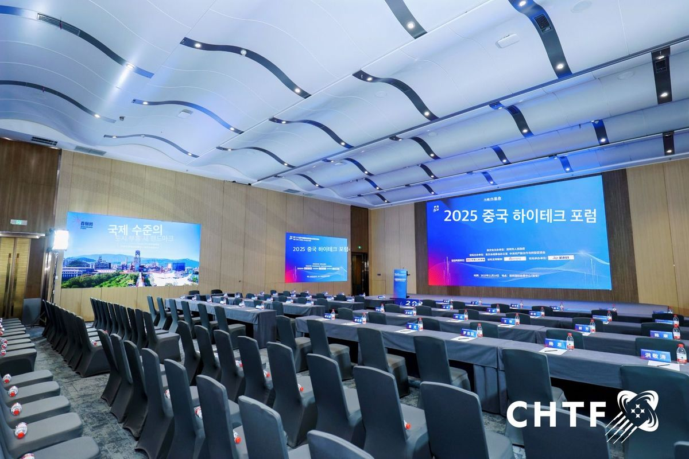
포럼·발표회·협약식을 고교회에서 여는 방법: 표준 행사 절차 정리2026-09-18수준 높은 동시 행사에는 좋은 기획과 함께 표준화된 운영 체계, 전문 공간, 국가급 전시회의 방문객이 필요합니다. 제28회 고교회 동시 행사 준비 전 과정을 정리해 드립니다…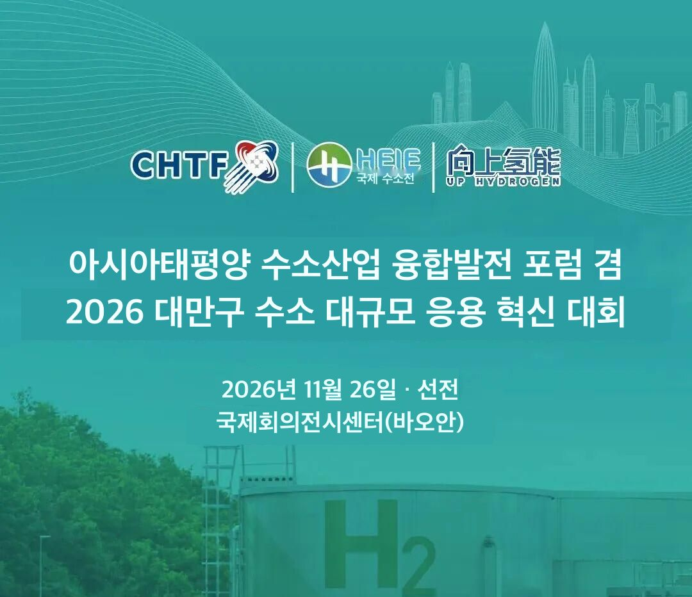
고교회 수소 특별 행사: 아시아태평양 수소산업 융합발전 포럼 겸 2026 대만구 수소 대규모 응용 혁신 서밋2026-09-15고교회 조직위원회, 전웨이 국제전시그룹, 샹상 수소(수소 산업 생태 연결 플랫폼)가 함께 2026 대만구 수소 대규모 응용·국제 협력 서밋을 마련했습니다…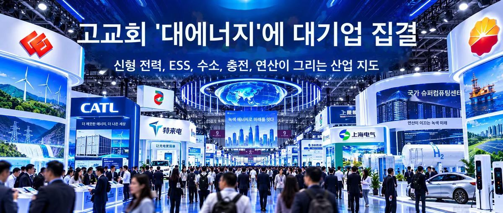
고교회 '대에너지'에 대기업 집결: 신형 전력, ESS, 수소, 충전, 연산이 그리는 산업 지도2026-09-11제28회 고교회 '대에너지' 부문은 신형 전력, ESS·배터리, 수소, 태양광·저장·충전, 연산·데이터센터의 5대 전시구역으로 이뤄집니다. 단순한 부스의 모음이 아니라… BCI, 임상에서 산업으로 질주: 고교회 아시아 생명과학·헬스 산업전, 11월 '규모화 원년'을 보여 준다2026-09-11업계의 역사를 다시 쓴 것은 규제 당국이었습니다. 중국 국가약품감독관리국이 보루이캉 의료의 NEO BCI 시스템 시판을 승인했습니다. 세계 최초로 승인된 침습형 BCI 의료기기입니다…
BCI, 임상에서 산업으로 질주: 고교회 아시아 생명과학·헬스 산업전, 11월 '규모화 원년'을 보여 준다2026-09-11업계의 역사를 다시 쓴 것은 규제 당국이었습니다. 중국 국가약품감독관리국이 보루이캉 의료의 NEO BCI 시스템 시판을 승인했습니다. 세계 최초로 승인된 침습형 BCI 의료기기입니다…
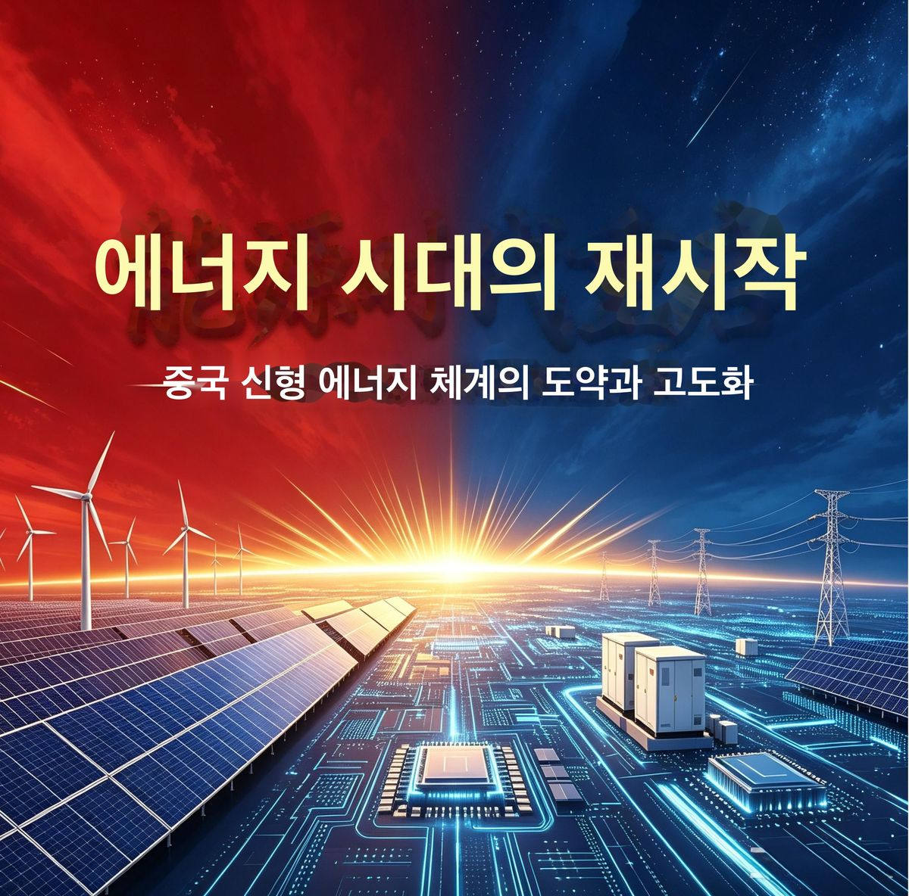
에너지 시대로 돌아온 강대국 경쟁: 고교회가 보여 주는 중국 신형 에너지 체계의 도약2026-09-07'중국 과학기술 제1전시회'로 불리는 제28회 고교회가 11월 26~28일 선전 국제회의전시센터(바오안)에서 열립니다. 선전시 정부가 주최하고 전웨이 전시그룹이… 세계 첫 암 백신의 성공과 앞다투는 자본: 11월 고교회 아시아 생명과학·헬스 산업전이 산업 가속을 잇다2026-09-042026년 8월 19일 저녁 모더나와 MSD는 공동 개발한 개인 맞춤 mRNA 암 백신이 고위험 흑색종 환자 수술 후 보조요법 3상(1,137명)에서 무재발 생존기간(RFS)과 원격 무전이… 산·학·연·금융의 결집으로 혁신 전환 촉진: 제28회 고교회가 하드테크의 산업화를 돕다2026-09-02'중국 과학기술 제1전시회' 고교회는 첨단 제품 전시의 무대를 넘어 산업 사상 교류, 기술 성과 발표, 산업 생태계 구축의 핵심 무대입니다. 선전시 인민정부가 주최하고 전웨이 전시그룹이 주관합니다…
고교회 아시아 신소재 산업전, 선전시 신소재산업협회와 글로벌 수급 거래 플랫폼 공동 구축2026-08-31최근 선전시 신소재산업협회가 공동 주관사로 이번 아시아 신소재 산업전에 합류해 참가사·관람객 유치, 포럼 기획, 수급 매칭에 전면 참여합니다. '국가급 창구'와 '산업 허브'의 결합으로…
산·학·연·금융의 결집으로 혁신 전환 촉진: 제28회 고교회가 하드테크의 산업화를 돕다2026-09-02'중국 과학기술 제1전시회' 고교회는 첨단 제품 전시의 무대를 넘어 산업 사상 교류, 기술 성과 발표, 산업 생태계 구축의 핵심 무대입니다. 선전시 인민정부가 주최하고 전웨이 전시그룹이 주관합니다…
고교회 아시아 신소재 산업전, 선전시 신소재산업협회와 글로벌 수급 거래 플랫폼 공동 구축2026-08-31최근 선전시 신소재산업협회가 공동 주관사로 이번 아시아 신소재 산업전에 합류해 참가사·관람객 유치, 포럼 기획, 수급 매칭에 전면 참여합니다. '국가급 창구'와 '산업 허브'의 결합으로…
 제28회 고교회 전력 오신전 11월 선전 개최: 세계 전력 기술기업 100여 곳 참가2026-08-27지난 전시에는 세계 유명 전력·에너지 기업 100곳 가까이가 참가해 큰 성과를 거뒀습니다. 중국다탕, 중국화뎬, 국가전력투자, 국가에너지그룹, 국가전망, 남방전망, 중국일중…
제28회 고교회 전력 오신전 11월 선전 개최: 세계 전력 기술기업 100여 곳 참가2026-08-27지난 전시에는 세계 유명 전력·에너지 기업 100곳 가까이가 참가해 큰 성과를 거뒀습니다. 중국다탕, 중국화뎬, 국가전력투자, 국가에너지그룹, 국가전망, 남방전망, 중국일중…
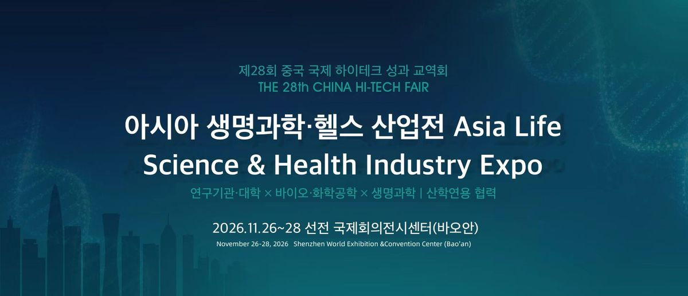
배추 한 포기의 '디지털 생명': 고교회 생명과학·헬스 산업전이 보여 줄 식품 안전의 미래2026-08-26생명과학과 AI의 결합은 어렵게 들리지만 가장 감동적인 지점은 일상으로 돌아온다는 데 있습니다. 우리 손의 배추는 운에 맡기는 뽑기가 아니라 정밀하게 '읽힌' 안심이 됩니다… 제28회 고교회 사전등록 시작: 개인·단체 관람 혜택 안내2026-08-25'중국 과학기술 제1전시회' 제28회 고교회가 2026년 11월 26~28일 선전 국제회의전시센터(바오안)에서 개막합니다. 전시면적 40만㎡에 국내외 우수 참가사 5,000여 곳이 모입니다…
제28회 고교회 사전등록 시작: 개인·단체 관람 혜택 안내2026-08-25'중국 과학기술 제1전시회' 제28회 고교회가 2026년 11월 26~28일 선전 국제회의전시센터(바오안)에서 개막합니다. 전시면적 40만㎡에 국내외 우수 참가사 5,000여 곳이 모입니다…
 제28회 고교회 시상 신청 공식 시작: 5대 상이 기다립니다2026-08-24고교회 시상은 부스에 걸어 두는 상장에 그치지 않습니다. 권위 있는 전문 심사로 하드테크 혁신 성과를 찾아내고 고교회의 플랫폼 자원으로 수상 프로젝트의 브랜드 영향력을 넓힙니다.
제28회 고교회 시상 신청 공식 시작: 5대 상이 기다립니다2026-08-24고교회 시상은 부스에 걸어 두는 상장에 그치지 않습니다. 권위 있는 전문 심사로 하드테크 혁신 성과를 찾아내고 고교회의 플랫폼 자원으로 수상 프로젝트의 브랜드 영향력을 넓힙니다.
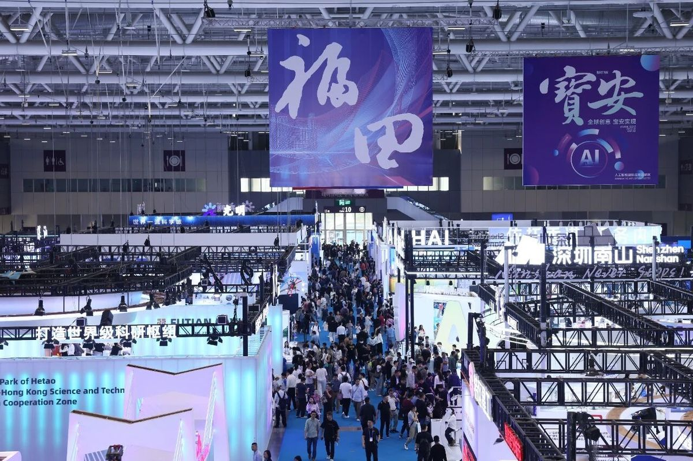
대만구를 잇고 광둥이 협력하다: 선전이 이끌고 광둥 곳곳의 혁신이 고교회에 모인다2026-08-21광저우·선전 양축에서 성 전역의 다극 네트워크 협력으로, 단일 지점의 혁신에서 전 지역 산업체인 공생으로. 웨강아오 대만구의 혁신 지도를 다시 그리는 변화가 조용히 일어나고 있습니다.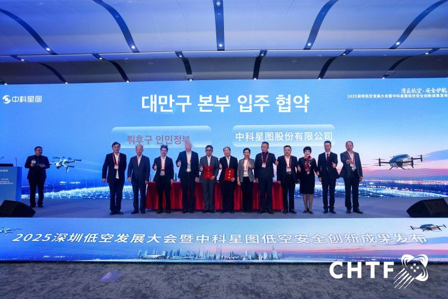
1,000억 위안대 경제·무역 성과가 증명한 가치: 고교회 실전형 행사가 여는 산업 협력의 기회2026-08-20제27회 고교회는 3일간 연인원 45만 명이 입장하고 신제품 5,000여 건 발표, 협약 1,023건, 의향 거래·투자 금액 1,700억 위안 돌파를 기록했습니다. 이 수치는 저절로 나온 것이 아닙니다… 세계 정상을 향하는 웨강아오 대만구 경제: 고교회가 보여 주는 중국 과학기술 혁신의 발언권2026-08-19세계적 만구의 경쟁은 경제 규모만이 아니라 혁신의 원천 역량, 산업 조직력, 자원 배분력, 제도 개방 수준의 종합 경쟁입니다. 2025년 웨강아오 대만구는 전국 국토의 0.6% 미만으로…
세계 정상을 향하는 웨강아오 대만구 경제: 고교회가 보여 주는 중국 과학기술 혁신의 발언권2026-08-19세계적 만구의 경쟁은 경제 규모만이 아니라 혁신의 원천 역량, 산업 조직력, 자원 배분력, 제도 개방 수준의 종합 경쟁입니다. 2025년 웨강아오 대만구는 전국 국토의 0.6% 미만으로…
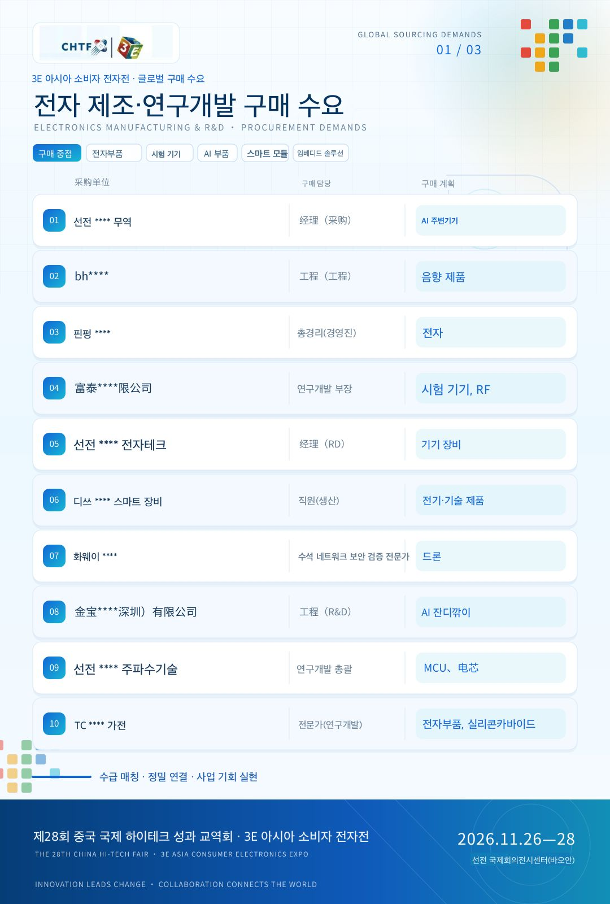
스마트 고도화가 바꾸는 구매: 고교회 소비자 전자전 바이어는 3대 핵심 집단2026-08-13새로 추가된 목록을 보면 소비자 전자 분야의 구매 수요는 '스마트 고도화'와 '상황 세분화' 추세가 뚜렷합니다. 구매 범위는 완제품에서 스마트 모듈, AI 칩, 센서, 디스플레이 패널, 전원 관리, 오디오·비디오로 넓어졌습니다… 구매 목록 376건 추가: 휴머노이드 로봇, AI 에이전트, 연산 서버 수요 포함2026-08-12이번 로봇 분야 구매 수요는 산업체인 여러 단계에 걸치며 휴머노이드, 생체모방, 4족 로봇개, 산업용 로봇, AGV, 로봇팔, 직립형, 가정용, 건설 로봇 등 완제품과 응용 제품을 포함합니다.
구매 목록 376건 추가: 휴머노이드 로봇, AI 에이전트, 연산 서버 수요 포함2026-08-12이번 로봇 분야 구매 수요는 산업체인 여러 단계에 걸치며 휴머노이드, 생체모방, 4족 로봇개, 산업용 로봇, AGV, 로봇팔, 직립형, 가정용, 건설 로봇 등 완제품과 응용 제품을 포함합니다.
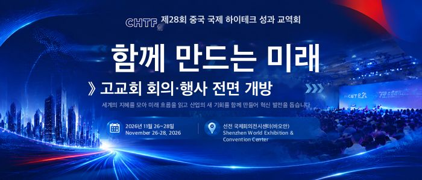
글로벌 바이어와의 대화: 고교회 포럼의 해외 주문 성사 비결2026-08-0611월 16일 고교회 글로벌 구매 매칭대회에서 Growatt가 파키스탄 바이어와 현장에서 구매 의향을 맺었습니다. Growatt 담당자는 "고교회를 통해 더 많은 국내외 고객이 우리 제품을 봤으면 한다"고 말했습니다. 4대 발명에서 별의 바다까지: 고교회에서 느끼는 과학기술 문명의 도약2026-08-05이 국가급 과학기술 행사는 농경에서 산업, 디지털 지능 문명까지 이어진 인류의 긴 여정을 잇고, 세계 첨단 기술이 신질 생산력으로 전환되는 힘을 보여 줍니다.
4대 발명에서 별의 바다까지: 고교회에서 느끼는 과학기술 문명의 도약2026-08-05이 국가급 과학기술 행사는 농경에서 산업, 디지털 지능 문명까지 이어진 인류의 긴 여정을 잇고, 세계 첨단 기술이 신질 생산력으로 전환되는 힘을 보여 줍니다.
 포브스 저고도 평가, 다시 고교회에서: 저고도 산업 고품질 발전 플랫폼 공동 구축2026-08-047월 28일 선전 씨월드 문화예술센터 4층 비전홀에서 2026 포브스 차이나 저고도 경제 산업 시리즈 평가 출범식이 열렸습니다. 정부, 산업, 학계, 연구, 금융, 수요, 서비스 전반의 자원이 모인 자리에서…
포브스 저고도 평가, 다시 고교회에서: 저고도 산업 고품질 발전 플랫폼 공동 구축2026-08-047월 28일 선전 씨월드 문화예술센터 4층 비전홀에서 2026 포브스 차이나 저고도 경제 산업 시리즈 평가 출범식이 열렸습니다. 정부, 산업, 학계, 연구, 금융, 수요, 서비스 전반의 자원이 모인 자리에서…
 고교회 회의실 '황금 시간대'를 잡으세요: 글로벌 혁신 협력의 출발점2026-08-03역대 고교회에서는 산업 서밋, 전문 포럼, 신제품 발표, 프로젝트 로드쇼, 기술 세미나, 시상 등 200회가 넘는 고급 회의와 행사가 열렸습니다. AI, 신에너지, 저고도 경제, 바이오의약 등 첨단 분야를 다룹니다…
고교회 회의실 '황금 시간대'를 잡으세요: 글로벌 혁신 협력의 출발점2026-08-03역대 고교회에서는 산업 서밋, 전문 포럼, 신제품 발표, 프로젝트 로드쇼, 기술 세미나, 시상 등 200회가 넘는 고급 회의와 행사가 열렸습니다. AI, 신에너지, 저고도 경제, 바이오의약 등 첨단 분야를 다룹니다…
 APEC과 연계한 글로벌 혁신 협력 허브: 고교회 성·시 과학기술 전시구역의 전국 협력2026-07-31고교회의 핵심 부문인 성·시 과학기술 전시구역은 국가 전략 과학기술 역량과 세계 혁신 도시를 잇습니다. 지역 경제·과학기술 혁신 성과 구역과 국제 우호도시 구역을 두고, APEC 연계 과학기술 혁신 특별전도 계획합니다…
APEC과 연계한 글로벌 혁신 협력 허브: 고교회 성·시 과학기술 전시구역의 전국 협력2026-07-31고교회의 핵심 부문인 성·시 과학기술 전시구역은 국가 전략 과학기술 역량과 세계 혁신 도시를 잇습니다. 지역 경제·과학기술 혁신 성과 구역과 국제 우호도시 구역을 두고, APEC 연계 과학기술 혁신 특별전도 계획합니다…
 포럼 모집: 고교회 아시아 우주전 고위급 포럼, 협회·학회·연구원·대학의 참여를 기다립니다2026-07-30우주항공 기술을 깊이 다지고 학술 연구, 기술 개발, 산업화, 인재 양성을 잇기 위해 상업 우주, 항공 장비, 위성 응용 분야의 고품질 발전을 돕고자 전국의 항공우주 관련 협회를 대상으로…
포럼 모집: 고교회 아시아 우주전 고위급 포럼, 협회·학회·연구원·대학의 참여를 기다립니다2026-07-30우주항공 기술을 깊이 다지고 학술 연구, 기술 개발, 산업화, 인재 양성을 잇기 위해 상업 우주, 항공 장비, 위성 응용 분야의 고품질 발전을 돕고자 전국의 항공우주 관련 협회를 대상으로…
 로봇 구매 수요 130건 이상 공개: 제28회 고교회 아시아 로봇 산업체인전의 정밀 수급 매칭2026-07-27제28회 고교회 아시아 로봇 산업체인전 준비가 순조로운 가운데 글로벌 구매 수요 수집도 이어지고 있습니다. 지금까지 조직위원회가 모은 구매 수요는 632건이며 그중 로봇 분야가 130건 이상입니다…
로봇 구매 수요 130건 이상 공개: 제28회 고교회 아시아 로봇 산업체인전의 정밀 수급 매칭2026-07-27제28회 고교회 아시아 로봇 산업체인전 준비가 순조로운 가운데 글로벌 구매 수요 수집도 이어지고 있습니다. 지금까지 조직위원회가 모은 구매 수요는 632건이며 그중 로봇 분야가 130건 이상입니다…
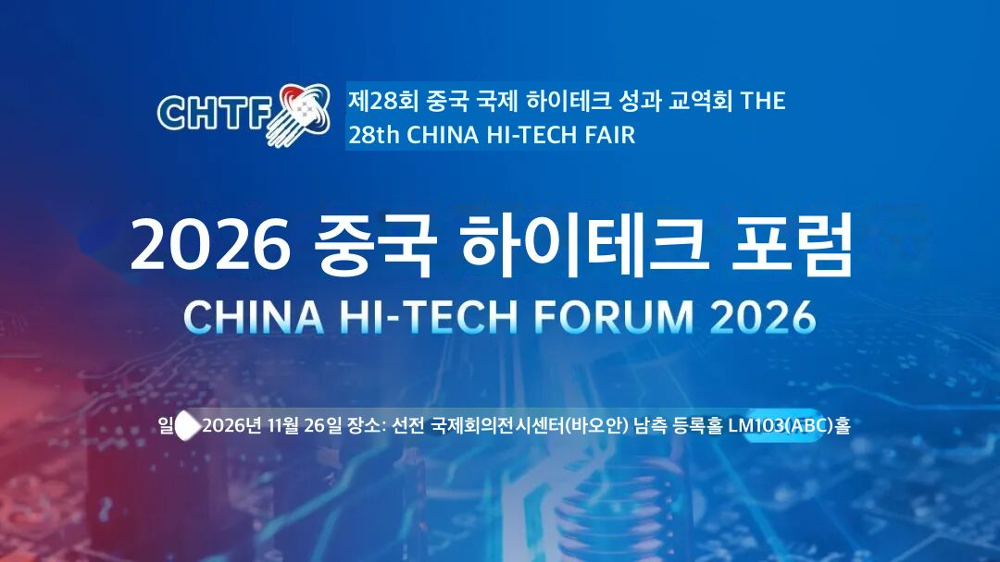
체화지능 새 시장에 집중: 고교회 AI 로봇 산업 행사 겸 중국 하이테크 포럼 곧 개막2026-07-24제28회 고교회 중국 하이테크 포럼이 2026년 11월 26일 개막합니다. AI 에이전트와 체화지능의 대규모 도입 흐름에 맞춰 대모델, 피지컬 AI, 로봇, 반도체, 신에너지, 저고도 경제 등 핵심 분야를 다룹니다… 재참가율 90%가 증명한 평판, 대학 전시구역 대폭 확대: 고교회가 직업학교에 여는 '전용 통로'2026-07-20연구기관·대학·산학융합·국가중점실험실 구역(대학·연구 전시구역)의 수치가 눈에 띕니다. 7월 중순까지 제27회에 참가한 유명 대학, 연구기관, 중점실험실의 90% 이상이 이미…
재참가율 90%가 증명한 평판, 대학 전시구역 대폭 확대: 고교회가 직업학교에 여는 '전용 통로'2026-07-20연구기관·대학·산학융합·국가중점실험실 구역(대학·연구 전시구역)의 수치가 눈에 띕니다. 7월 중순까지 제27회에 참가한 유명 대학, 연구기관, 중점실험실의 90% 이상이 이미…
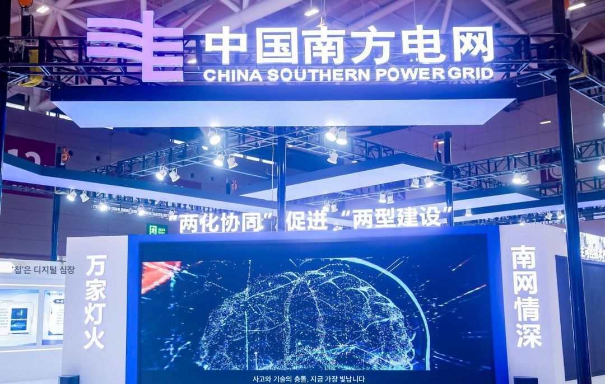
15차 5개년 계획 기조 확정, 전력망의 황금 5년: 고교회 아시아 신형 전력·송배전전이 여는 조 단위 투자 기회2026-07-17아시아 신형 전력·발전·송전·변전·배전·용전 산업전(이하 아시아 신형 전력·송배전전)은 제28회 고교회의 핵심 전문전으로, 아시아 신형 전력 시스템 장비의 기술 고도화와 성과 전환의… 중국전력설비관리협회: 전력 오신전, 전력 산업 전반의 협력 혁신 거점을 만든다2026-07-14고교회 기간에 '오신' 전력설비기술전 겸 신형 전력 시스템 설비 개조·고도화 기술대회(전력 오신전)가 함께 열립니다…
중국전력설비관리협회: 전력 오신전, 전력 산업 전반의 협력 혁신 거점을 만든다2026-07-14고교회 기간에 '오신' 전력설비기술전 겸 신형 전력 시스템 설비 개조·고도화 기술대회(전력 오신전)가 함께 열립니다…
 국가급 전시회의 혜택을 잡으세요: 2026 고교회 회의 패키지 예약, 행사·노출·계약을 한 번에2026-07-08이번 고교회는 3단계 회의 패키지를 내놓아 100명 세미나부터 1,000명 신제품 발표까지 원스톱으로 지원합니다. 전문 관람객 45만 명의 유입과 전 매체 노출로 브랜드 영향력을 저비용으로 높이고…
국가급 전시회의 혜택을 잡으세요: 2026 고교회 회의 패키지 예약, 행사·노출·계약을 한 번에2026-07-08이번 고교회는 3단계 회의 패키지를 내놓아 100명 세미나부터 1,000명 신제품 발표까지 원스톱으로 지원합니다. 전문 관람객 45만 명의 유입과 전 매체 노출로 브랜드 영향력을 저비용으로 높이고…
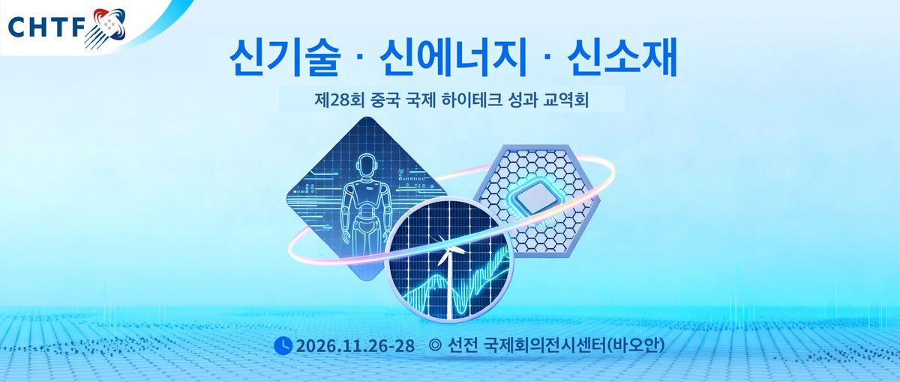
신기술·신에너지·신소재: 제28회 고교회의 전략 구도와 시대적 사명2026-07-072026년에서 돌아보고 내다볼 때 '신기술, 신소재, 신에너지'는 고교회의 핵심 배치 방침이자 중국과 세계 산업 변혁의 3대 전략 축입니다.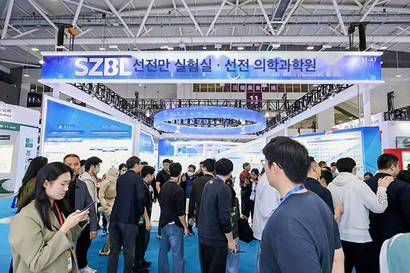
혁신의 경계를 넘어 자본과 잇다: 제28회 고교회, 대학 연구성과 산업화의 고속도로를 열다2026-07-06칭화대, 베이징대, 푸단대, 상하이교통대, 화중과기대, 난카이대, 선전이공대, 선전 MSU-BIT 대학 등 중국 주요 대학이 싱가포르국립대, 홍콩과기대, 싱가포르 난양이공대 등과 함께… 고교회 3E전 개인 IP '둥둥': 기술을 알고, 생활을 알고, 당신을 아는 첨단 소비 안내자2026-06-29고교회 3E전 공식 진행자 '둥둥'이 기업 탐방과 라이브를 여러 차례 진행합니다. 기업 전시실, 연구개발센터, 생산라인을 찾아 참가사의 브랜드 노출과 제품 인지도를 높이고 목표 고객에게 정확히 전달합니다… [관람 사전등록 시작] BCE 2026 원스톱 정밀 구매 행사: 기간 한정 무료, 다양한 혜택2026-06-1815차 5개년 계획의 바이오 제조·화학공학 중점 육성 방향에 맞춰 선전 '20+8' 산업 체계와 정책 기회를 활용하고자, 고교회 핵심 전문전 아시아 바이오·화학공학전을…
[관람 사전등록 시작] BCE 2026 원스톱 정밀 구매 행사: 기간 한정 무료, 다양한 혜택2026-06-1815차 5개년 계획의 바이오 제조·화학공학 중점 육성 방향에 맞춰 선전 '20+8' 산업 체계와 정책 기회를 활용하고자, 고교회 핵심 전문전 아시아 바이오·화학공학전을…
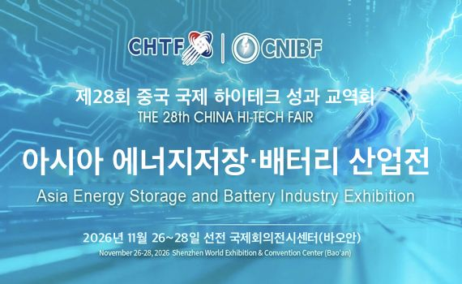
세계 에너지 전환 가속: 고교회 아시아 에너지저장·배터리 산업전 11월 선전 개최2026-03-05중국은 세계 ESS 산업체인의 제조 중심으로 배터리 출하량의 85%, 인버터의 80% 이상을 차지합니다. 유럽이 중국 ESS 수출의 60% 이상을 차지하며 분쟁이 배터리·인버터 수출을 밀어 올려 2026년 수출 증가세가 기대됩니다… 국산 하이브리드 무인 수송기 첫 비행 성공: 우주·자동차 대기업이 만든 '차이훙 YH-1000S'2026-02-05국산 드론 개발의 업종 간 협력이 또 한 번 돌파구를 냈습니다. 중국항천과기집단 제11연구원이 개발한 세계 최초 하이브리드 무인 수송기 차이훙 YH-1000S가 충칭 량핑공항에서 첫 비행을 마쳤습니다…
국산 하이브리드 무인 수송기 첫 비행 성공: 우주·자동차 대기업이 만든 '차이훙 YH-1000S'2026-02-05국산 드론 개발의 업종 간 협력이 또 한 번 돌파구를 냈습니다. 중국항천과기집단 제11연구원이 개발한 세계 최초 하이브리드 무인 수송기 차이훙 YH-1000S가 충칭 량핑공항에서 첫 비행을 마쳤습니다…
 6G에서 휴머노이드까지: 공업정보화부 최신 발표가 보낸 AI·로봇 산업 신호2026-02-021월 21일 국무원 신문판공실 기자회견에서 공업정보화부가 2025년 공업·정보화 성과를 소개했습니다. 많은 정책 정보 가운데 AI와 로봇 산업 관련 내용이 특히 집중되고 신호가 분명했습니다…
6G에서 휴머노이드까지: 공업정보화부 최신 발표가 보낸 AI·로봇 산업 신호2026-02-021월 21일 국무원 신문판공실 기자회견에서 공업정보화부가 2025년 공업·정보화 성과를 소개했습니다. 많은 정책 정보 가운데 AI와 로봇 산업 관련 내용이 특히 집중되고 신호가 분명했습니다…
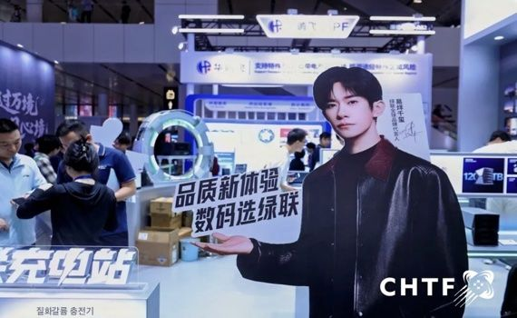
고교회 3E에서 CES로: 중국 스마트 하드웨어 기업, '제품 수출'에서 '표준 동행'으로2026-01-27고교회 3E전의 집중 공개에서 CES의 기술 선도까지, 선전에서 라스베이거스로 이어진 태평양 횡단 전시 여정이 중국 스마트 하드웨어의 세계적 역할을 다시 정의하고 있습니다. 두 달 전 제27회 고교회 3E전에서 UGREEN은… 성황리에 마무리: 광둥 쥔촹, 고교회에서 화제 모으고 바로 계약2026-01-26제27회 고교회는 막을 내렸지만 '광둥 쥔촹'의 혁신 열기는 이어지고 있습니다. 3일간의 행사에서 광둥성 퇴역군인사무청이 이끈 '광둥 쥔촹·과학기술 혁신' 주제 구역은 37개 기업과…
성황리에 마무리: 광둥 쥔촹, 고교회에서 화제 모으고 바로 계약2026-01-26제27회 고교회는 막을 내렸지만 '광둥 쥔촹'의 혁신 열기는 이어지고 있습니다. 3일간의 행사에서 광둥성 퇴역군인사무청이 이끈 '광둥 쥔촹·과학기술 혁신' 주제 구역은 37개 기업과…
 CES 2026으로 본 고교회 AI·로봇 산업 판단: 로봇이 시스템 수준의 성숙으로 향할 때2026-01-22CES 2026 이후 로봇 업계에는 뚜렷한 공감대가 생겼습니다. 로봇이 '보여 주는 기술'에서 '평가받는 산업 시스템'으로 바뀌고 있다는 것입니다. 이 변화는 특정 히트 제품이나 한 기업에서 비롯된 것이 아니라…
CES 2026으로 본 고교회 AI·로봇 산업 판단: 로봇이 시스템 수준의 성숙으로 향할 때2026-01-22CES 2026 이후 로봇 업계에는 뚜렷한 공감대가 생겼습니다. 로봇이 '보여 주는 기술'에서 '평가받는 산업 시스템'으로 바뀌고 있다는 것입니다. 이 변화는 특정 히트 제품이나 한 기업에서 비롯된 것이 아니라…